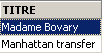
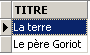
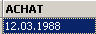
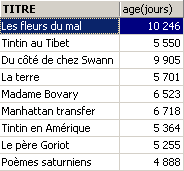
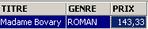
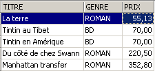
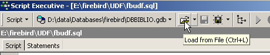
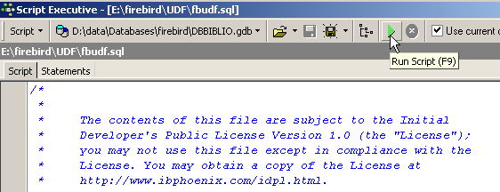
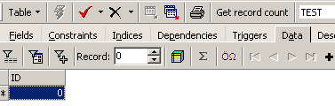

4. SQL-Ausdrücke
4.1. Einführung
In den meisten SQL-Befehlen ist es möglich, einen Ausdruck zu verwenden. Nehmen wir zum Beispiel den SELECT-Befehl:
SELECT Ausdruck1, Ausdruck2, ... from Tabelle WHERE Ausdruck |
SELECT wählt die Zeilen aus, für die der Ausdruck wahr ist, und zeigt für jede dieser Zeilen die Werte von expr1, expr2, ... an.
Beispiele
In diesem Abschnitt erläutern wir das Konzept eines Ausdrucks. Ein einfacher Ausdruck hat folgende Form:
Operand1 Operator Operand2
oder
Funktion(Parameter)
Beispiel
Im Ausdruck GENRE = 'ROMAN'
- GENRE ist Operand1
- 'ROMAN' ist Operand2
- = ist der Operator
Im Ausdruck upper(genre)
- ist upper eine Funktion
- ist „genre“ ein Parameter dieser Funktion.
Wir werden zunächst Ausdrücke mit Operatoren behandeln, anschließend stellen wir die in Firebird verfügbaren Funktionen vor.
4.2. Ausdrücke mit Operatoren
Wir werden Ausdrücke mit Operatoren nach dem Typ ihrer Operanden klassifizieren:
- numerisch
- Zeichenkette
- Datum
- Boolesche oder logische
4.2.1. Ausdrücke mit numerischen Operanden
4.2.1.1. Liste der Operatoren
Seien number1, number2 und number3 Zahlen. Die folgenden Operatoren können verwendet werden:
Relationale Operatoren
: Zahl1 ist größer als Zahl2 | |
: Zahl1 ist größer oder gleich Zahl2 | |
: Zahl1 ist kleiner als Zahl2 | |
: Zahl1 ist kleiner oder gleich Zahl2 | |
: Zahl1 ist gleich Zahl2 | |
: Zahl1 ist nicht gleich Zahl2 | |
: entspricht | |
: Zahl1 liegt im Bereich [Zahl2, Zahl3] | |
: Zahl1 gehört zur Liste der Zahlen | |
: number1 hat keinen Wert | |
: number1 hat einen Wert |
Arithmetische Operatoren
: Addition | |
: Subtraktion | |
: Multiplikation | |
: Division |
4.2.1.2. Relationale Operatoren
Ein relationaler Ausdruck drückt eine Beziehung aus, die entweder wahr oder falsch ist. Das Ergebnis eines solchen Ausdrucks ist daher ein boolescher oder logischer Wert.
Beispiele:


4.2.1.3. Arithmetische Operatoren
Wir sind mit arithmetischen Ausdrücken vertraut. Sie drücken eine Berechnung aus, die auf numerische Daten angewendet werden soll. Wir sind solchen Ausdrücken bereits begegnet: Angenommen, der in den Datensätzen der Datei BIBLIO gespeicherte Preis ist ein Preis vor Steuern. Wir möchten jeden Titel mit seinem Preis inklusive Steuern bei einem Mehrwertsteuersatz von 18,6 % anzeigen:
Sollten die Preise um 3 % steigen, lautet der Befehl
Ein Ausdruck kann mehrere arithmetische Operatoren sowie Funktionen und Klammern enthalten. Diese Elemente werden nach unterschiedlichen Prioritäten verarbeitet:
1 | <---- höchste Priorität | |
2 | ||
3 | ||
4 | <---- niedrigere Priorität |
Wenn in einem Ausdruck zwei Operatoren gleicher Priorität vorkommen, wird der ganz links stehende zuerst ausgewertet.
Beispiele
Der Ausdruck PRICE*RATE+TAXES wird als (PRICE*RATE)+TAXES ausgewertet. Dies liegt daran, dass der Multiplikationsoperator zuerst angewendet wird. Der Ausdruck PRICE*RATE/100 wird als (PRICE*RATE)/100 ausgewertet.
4.2.2. Ausdrücke mit Zeichenoperanden
4.2.2.1. Liste der Operatoren
Die folgenden Operatoren können verwendet werden:
Seien string1, string2, string3 und string pattern
: string1 ist größer als string2 | |
: string1 ist größer als oder gleich string2 | |
: string1 ist kleiner als string2 | |
: string1 ist kleiner oder gleich string2 | |
: string1 ist gleich string2 | |
: string1 ist nicht gleich string2 | |
: gleich | |
: string1 liegt im Bereich [string2, string3] | |
: string1 gehört zur Liste der Zeichenfolgen | |
: string1 hat keinen Wert | |
: Kanal1 hat einen Wert | |
: string1 entspricht dem Muster |
Verknüpfungsoperator
Zeichenkette1 || Zeichenkette2 : string2 wird an string1 angehängt
4.2.2.2. Relationale Operatoren
Was bedeutet es, Zeichenfolgen mit Operatoren wie <, <= usw. zu vergleichen?
Jedes Zeichen wird als Ganzzahl kodiert. Beim Vergleich zweier Zeichen werden ihre Ganzzahlcodes verglichen. Die verwendete Kodierung folgt der natürlichen Reihenfolge des Wörterbuchs:
Zahlen kommen vor Buchstaben, und Großbuchstaben vor Kleinbuchstaben.
4.2.2.3. Vergleich zweier Zeichenfolgen
Betrachten wir die Relation „CAT“ < „DOG“. Ist sie wahr oder falsch? Um diesen Vergleich durchzuführen, vergleicht das DBMS die beiden Zeichenfolgen Zeichen für Zeichen anhand ihrer Integer-Codes. Sobald zwei Zeichen als unterschiedlich erkannt werden, gilt die Zeichenfolge, die das kleinere der beiden Zeichen enthält, als kleiner als die andere Zeichenfolge. In unserem Beispiel wird „CAT“ mit „DOG“ verglichen. Wir erhalten die folgenden aufeinanderfolgenden Ergebnisse:
Nach diesem letzten Vergleich wird die Zeichenkette 'CAT' als kürzer als die Zeichenkette 'DOG' erklärt. Die Relation 'CAT' < 'DOG' ist daher wahr.
Vergleichen wir nun „CHAT“ und „chat“.
Nach diesem Vergleich wird die Relation „CHAT“ < „chat“ als wahr ausgewertet.
Beispiele


4.2.2.4. Der LIKE-Operator
Der LIKE-Operator wird wie folgt verwendet: Zeichenfolge LIKE Muster
Die Bedingung ist wahr, wenn string mit pattern übereinstimmt. Das Muster ist eine Zeichenkette, die zwei Platzhalterzeichen enthalten kann:
, das für eine beliebige Zeichenfolge steht | |
was für ein beliebiges einzelnes Zeichen steht |
Beispiele


4.2.2.5. Der Verkettungsoperator

4.2.3. Ausdrücke mit Operanden vom Typ „Datum“
Seien date1, date2 und date3 Datumsangaben. Die folgenden Operatoren können verwendet werden:
Relationale Operatoren
ist wahr, wenn date1 vor date2 liegt | |
ist wahr, wenn Datum1 vor oder gleich Datum2 liegt | |
ist wahr, wenn date1 später als date2 ist | |
ist wahr, wenn date1 am oder nach date2 liegt | |
ist wahr, wenn date1 und date2 identisch sind | |
ist wahr, wenn date1 und date2 unterschiedlich sind. | |
entspricht | |
ist wahr, wenn date1 zwischen date2 und date3 liegt | |
ist wahr, wenn date1 in der Liste der Daten enthalten ist | |
ist wahr, wenn date1 keinen Wert hat | |
ist wahr, wenn date1 einen Wert hat | |
ist wahr, wenn date1 dem Muster entspricht | |
Arithmetische Operatoren
: Anzahl der Tage zwischen Datum1 und Datum2 | |
: Datum2, sodass Datum1 – Datum2 = Zahl | |
: Datum2, sodass Datum2 – Datum1 = Zahl |
Beispiele



Wie alt sind die Bücher in der Bibliothek?

4.2.4. Ausdrücke mit booleschen Operanden
Zur Erinnerung: Ein boolescher oder logischer Wert kann zwei Werte annehmen: „true“ oder „false“. Der logische Operand ist oft das Ergebnis eines relationalen Ausdrucks.
Seien boolean1 und boolean2 zwei Boolesche Werte. Es gibt drei mögliche Operatoren, die in der Reihenfolge ihrer Priorität wie folgt lauten:
| ist wahr, wenn sowohl boolean1 als auch boolean2 wahr sind. |
| ist wahr, wenn entweder boolean1 oder boolean2 wahr ist. |
| hat einen Wert, der das Gegenteil des Werts von boolean1 ist. |
Beispiele

Wir suchen nach Büchern in einer bestimmten Preisklasse:

Umgekehrte Suche:

Achte auf die Operatorpriorität!
SQL> select titre,genre,prix from biblio
where genre='ROMAN' and prix>200 or prix<100
order by prix asc

Verwenden Sie Klammern, um die Operatorpriorität zu steuern:
SQL> select titre,genre,prix from biblio
where genre='ROMAN' and (prix>200 or prix<100)
order by prix asc

4.3. Vordefinierte Funktionen von Firebird
Firebird verfügt über vordefinierte Funktionen. Diese können nicht sofort in SQL-Anweisungen verwendet werden. Sie müssen zunächst das SQL-Skript <firebird>\UDF\ib_udf.sql ausführen, wobei <firebird> für das Installationsverzeichnis des Firebird-DBMS steht:

Mit IBExpert gehen wir wie folgt vor:
- Wir verwenden das Tool [Script Executive], das über die Option [Tools/Script Executive] aufgerufen wird:

- Sobald das Tool geöffnet ist, laden wir das Skript <firebird>\UDF\ib_udf.sql:

- Anschließend führen wir das Skript aus:

Sobald dies geschehen ist, stehen die vordefinierten Funktionen von Firebird für die Datenbank zur Verfügung, mit der Sie zum Zeitpunkt der Skriptausführung verbunden waren. Um dies zu überprüfen, gehen Sie einfach zum Datenbank-Explorer und klicken Sie auf den Knoten [UDF] der Datenbank, in die die Funktionen importiert wurden:

Oben sehen Sie die für die Datenbank verfügbaren Funktionen. Um sie zu testen, ist es praktisch, eine einzeilige Tabelle zu haben. Nennen wir sie TEST:

und definieren Sie sie wie folgt (Rechtsklick auf „Tables“ / „New Table“):
Fügen wir dieser Tabelle eine einzelne Zeile hinzu:


Wechseln wir nun zum SQL-Editor (F12) und führen wir die folgende SQL-Anweisung aus:
die die vordefinierte cos-Funktion (Kosinus) verwendet. Der obige Befehl berechnet cos(0) für jede Zeile in der Tabelle TEST, also faktisch für eine einzelne Zeile. Er zeigt daher einfach den Wert von cos(0) an:

UDFs (benutzerdefinierte Funktionen) sind Funktionen, die Benutzer erstellen können, und Bibliotheken mit UDFs sind im Internet zu finden. Hier beschreiben wir nur einige der Funktionen, die in der herunterladbaren Version von Firebird (2005) verfügbar sind. Wir klassifizieren sie nach dem vorherrschenden Typ ihrer Parameter oder nach ihrer Rolle:
- Funktionen mit numerischen Parametern
- Funktionen mit Parametern vom Typ String
4.3.1. Funktionen mit numerischen Parametern
| Absolutwert von Zahl abs(-15) = 15 |
| die kleinste ganze Zahl, die größer oder gleich Zahl ist ceil(15,7) = 16 |
| die größte ganze Zahl, die kleiner oder gleich der Zahl ist floor(14,3) = 14 |
| Quotient der ganzzahligen Division (der Quotient ist eine ganze Zahl) von Zahl1 durch Zahl2 div(7,3)=2 |
| Rest der ganzzahligen Division (der Quotient ist eine ganze Zahl) von Zahl1 durch Zahl2 mod(7,3)=1 |
| -1, wenn Zahl < 0 0, wenn Zahl = 0 +1, wenn Zahl > 0 Vorzeichen(-6) = -1 |
| Quadratwurzel von Zahl, wenn Zahl >= 0 -1, wenn Zahl < 0 sqrt(16) = 4 |
4.3.2. Funktionen mit Zeichenfolgenparametern
ascii_char(Zahl) | ASCII-Code-Zeichennummer ascii_char(65) = 'A' |
lower(Zeichenkette) | wandelt die Zeichenkette in Kleinbuchstaben um lower('INFO')='info' |
ltrim(Zeichenkette) | Left Trim – Leerzeichen vor dem Text in string werden entfernt: ltrim(' kitten')='kitten' |
replace(Zeichenkette1, Zeichenkette2, Zeichenkette3) | Ersetzt string2 durch string3 in string1. replace('Katze und Hund','Katze','**')='**ze und **und' |
rtrim(string1, string2) | Rechts trimmen – wie ltrim, jedoch rechts rtrim('cat ')='cat' |
substr(Zeichenkette, p, q) | Teilzeichenfolge einer Zeichenkette, die an Position p beginnt und an Position q endet. substr('kitten',3,5)='to' |
ascii_val(Zeichen) | ASCII-Code eines Zeichens ascii_val('A')=65 |
strlen(Zeichenkette) | Anzahl der Zeichen in der Zeichenkette strlen('kitten')=6 |